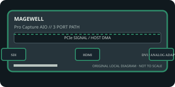

[ INDIVIDUAL COMPONENT // EXPANSION CARDS ]
Magewell Pro Capture AIO
Flexible single-channel capture board accepting digital and adapter-based analog sources. This static reference distinguishes documented card I/O from host software, codecs, and external signal paths.

IDENTIFICATION: Match the exact SKU, model marking, part number, board revision, bracket and connector layout to manufacturer documentation. Similar family names do not imply interchangeable ports, firmware or support.
Capture, playback and compatibility specifications
| Exact model / SKU | Pro Capture AIO — verify the marking and revision on the physical card. |
|---|---|
| PCI/PCIe bus and lanes | PCI Express Gen 2 x4. Maintain four usable lanes and enough sustained host/memory bandwidth for the selected input. |
| Digital video inputs | One active capture path accepts supported HDMI, SDI or DVI digital sources. The exact physical input and supported format depend on the selected port/adapter and board revision. |
| Analog ports | VGA/component analog video is available through the manufacturer-specified DVI-to-VGA/component adapter path. It is capture-only: there are no analog video outputs. |
| Input formats | SD/HD, SDI and HDMI/DVI up to supported 2048×2160-class timings; VGA/component timing limits and maximum rate depend on the supplied adapter and current datasheet. |
| Output formats and connectors | No video playback output; the board delivers captured frames to the host. No independent output connector is specified. |
| Encoding and driver model | Video processing and color conversion are on-card; compressed media-file encoding is host/application-side, not an onboard codec feature. |
| Operating-system compatibility | Magewell driver and SDK offer Windows, Linux and macOS support subject to model and release. Verify connector/adapter selection in the driver utility and check current downloads for OS compatibility. |
| Software | Magewell Capture Express, SDK/API and compatible third-party ingest applications. Use Magewell’s supported adapter and input selection procedure. |
| Power and cooling | PCIe slot-powered board; no universal maximum draw is stated in the short product page. Confirm actual revision, adapter, chassis airflow and host slot budget in the complete manufacturer documentation. |
| Firmware caveat | Firmware and input support are managed through model-specific Magewell software. Match firmware to Pro Capture AIO—not similarly named HDMI/SDI cards—and avoid interrupted updates. |
Integration notes and limitations
- Only the selected input path is active at a time; an adapter does not turn the board into simultaneous multi-input capture. Analog quality and timing depend on source, cable and converter path.
- Verify physical slot fit, PCIe lane wiring, BIOS/UEFI enumeration, host bandwidth and driver support together; a longer slot does not guarantee the electrical width the card needs.
- Record the board revision, firmware/driver versions, OS build, application, signal standard, source timing and tested pixel format as part of commissioning.
- Distinguish a video transport/pixel format from a compressed file codec. Unless the manufacturer explicitly states hardware encoding, codec creation and recording are host-application tasks.
Manufacturer sources and support
- Magewell — Pro Capture AIO product specificationsManufacturer source; consult the exact model/revision and software-release notes before installation.
- Magewell — Pro Capture drivers, manuals and download centerManufacturer source; consult the exact model/revision and software-release notes before installation.
Product revisions, driver support and application integrations change over time; manufacturer documentation for the exact card takes precedence over generic family-level guidance.